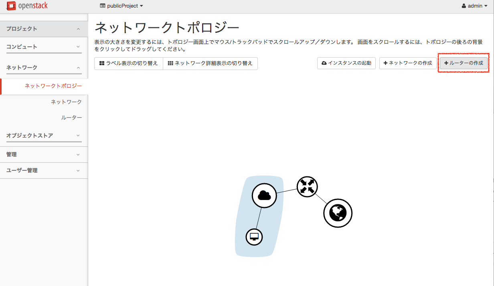
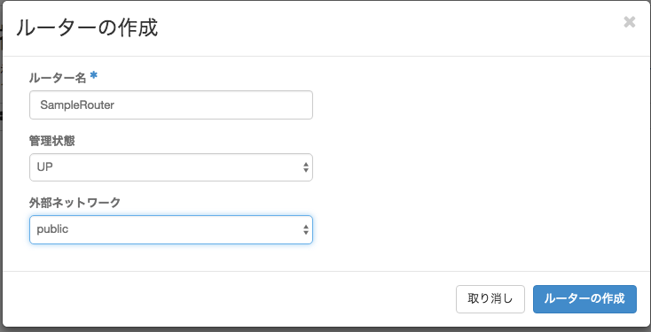
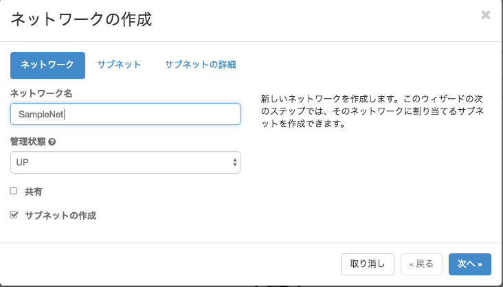
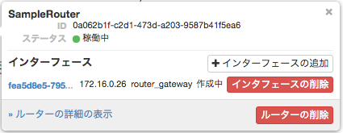
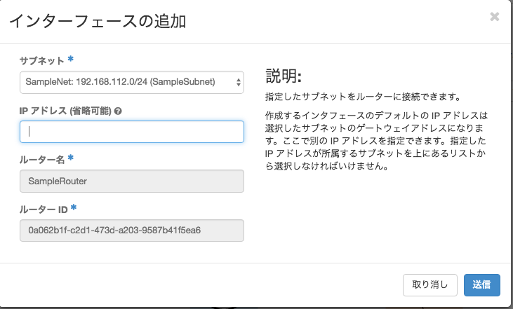

仮想ネットワークのデプロイ¶
仮想ネットワークについて¶
前提¶
- 仮想ネットワーク「SampleNet」を作成する
- 「SampleNet」は１つのサブネット「SampleSubnet」を持つ
- 「SampleSubnet」は192.168.112.0/24ネットワークを定義する
- 「SampleSubnet」のデフォルトゲートウェイは192.168.112.1である
- 上記のネットワークとpublic(=外部)を「SampleRouter」で接続する
構築手順¶
1.ダッシュボードより「ネットワーク」→「ネットワーク・トポロジー」を選択する 2.「ルーターの作成」を選択する。
{kind=link}
3.「ルーター名」に「SampleRouter」を指定し、「外部ネットワーク」には「Public」を選択する。
{kind=link}
仮想ルーターが作成される。
{kind=link}
4.再度「ネットワーク・トポロジー」より、「ネットワークの作成」を選択する
5.「ネットワーク」タブで「ネットワーク名」に「SampleNet」を指定し、「サブネットの作成」にチェックをする。
{kind=link}
注釈
「共有」にチェックすると全てのユーザがこのネットワークを参照できます。
- 6.「サブネット」タブで、「サブネット名」に「SampleSubnet」を指定する。
- 「ネットワークアドレス」は「192.168.112.0/24」を指定する。 「ゲートウェイIP」は「192.168.112.1」を指定する。
{kind=link}
- 7.「サブネットの詳細」タブで、「IPアドレス割り当てプール」内に以下の項目を指定する。
- 「192.168.112.2,192.168.112.254」
{kind=link}
警告
6.で指定したゲートウェイIPを含まないIPアドレス範囲を指定してください。
8.「DNSサーバ」には「8.8.8.8」を指定し、「作成」ボタンを選択する。
注釈
Googleが持つDNSサーバIPアドレス
9.「ネットワーク・トポロジー」で「SampleRouter」を選択し、「インターフェースの追加」を選択する。
{kind=link}
10.「インターフェースの追加」ウィザードの「サブネット」では、先ほど作成した「SampleNet:192.168.112.0/24(SampleSubnet)」を選択し、「送信」を選択する。
{kind=link}
注釈
利用可能な最小IPアドレス(=192.168.112.1)がゲートウェイIPアドレスとして割り振られる為、指定は不要。 6.で指定したゲートウェイIPアドレスで指定したIPアドレスを指定する。
- 11.仮想ネットワークが作成できました。
- この仮想ネットワークに対し、仮想マシンを接続する事で、外部と通信が出来ます。
{kind=link}
以上